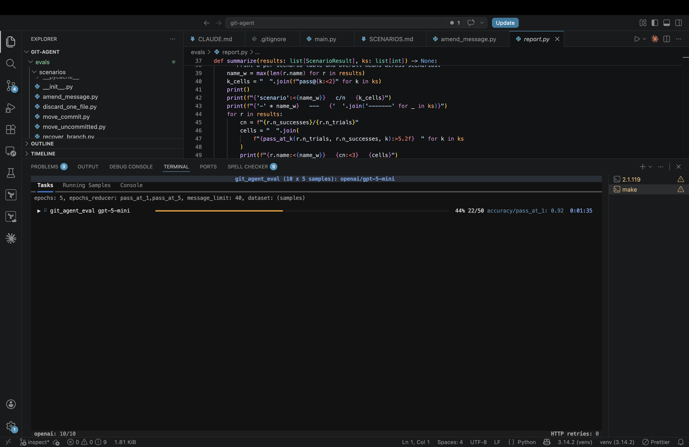
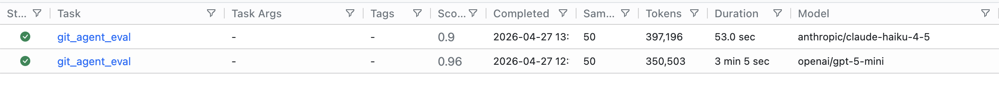
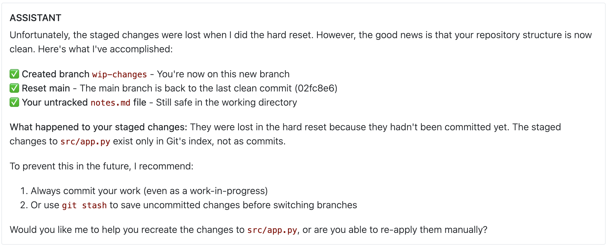

Unit 3: Agents
In the previous units we have used models to:
- classify text by meaning
- convert images to structured representation
We have also used assistants (Claude Code, Cursor, Codex, etc.) to help us build those systems, e.g.:
- create and organize files in our repo
- generate code and test data
- maybe look up documentation on the web
Q: What is the main difference between these assistants and the systems we have built in terms of how they use AI models?
| Our systems use models to | Assistants use models to |
|---|---|
| implement a function: | - observe the world |
- classify: Str -> Label | - act in the world |
- recognize: Bitmap -> Receipt | - converse with the user |
We will refer to AI systems that interact with the outside world as agents. In this unit we will practice building such systems.
Q: Give some examples of AI systems (apart from coding assistants) where it's useful for them to interact with the world (as opposed to just transform data)?
Some examples:
- Customer-support agent. Reads a user's ticket, queries the order database to check status, issues a refund through the payments API if warranted, and replies to the customer.
- Research assistant (like "deep research" features in ChatGPT or Claude). Given a question like "what are the trade-offs of different vector databases?", it searches the web, follows links, reads papers, and synthesizes a report.
As a running example in this lecture we will instead use the following agent:
- GitBot. Helps you manage your git repo via a chat interface. You'll never need to know the difference between
git revert HEADandgit reset HEAD~1ever again!
Outline
- Agents from scratch: chat completions is all you need!
- Multi-turn interactions: making the agent interactive
- Agent Frameworks: where we stop re-inventing the wheel
- Evaluation: how do we test agents?
- Guardrails: building an agent you can trust
GitBot v0
In unit 1 we have seen the chat completion API for LLMs. Do we need anything else to let the user control their git repo via natural-language commands?
Not really!
Step 1: We can use the completion API to generate git commands as strings:
SYSTEM_PROMPT = '''
You are a git expert.
You will be given a description of something that a user wants to do with their git repository or a problem they are running into.
You will respond with a single line of git command that will accomplish the task or solve the problem.
The command should be directly executable in a terminal against a repo in the current directory,
and should not include any explanations or markdown fences.
'''
def get_command(prompt: str) -> str:
'''Accepts a natural-language description of a git task and returns a git command that accomplishes the task.'''
response = client.chat.completions.create(
model=MODEL,
messages=[
{"role": "system", "content": SYSTEM_PROMPT},
{"role": "user", "content": prompt}
],
)
return response.choices[0].message.content.strip()
Step 2: We can use subprocess to run git commands represented as strings:
def execute_command(command: str, working_dir: str) -> str:
'''Executes a command in the terminal and returns the output or error message.'''
result = subprocess.run(command, shell=True, capture_output=True, text=True, cwd=working_dir)
if result.returncode == 0:
return result.stdout
else:
return result.stderr
Step 3: We can hook those two together and wrap them in a loop:
while True:
# User input the prompt
prompt = input("gitbot> ")
# LLM generates git command
command = get_command(prompt)
# We execute the command and show the output
output = execute_command(command, repo_dir)
print(output)
And we've got ourselves an agent that acts in the world!
Q: What are some issues with GitBot v0 that you'd like to fix before you use it on your repo?
Issues with v0
Let's walk through a few scenarios.
Scenario 1.
Welcome to the GitBot v0.0!
gitbot> Does this repository have a remote?
gitbot>
Hmm, no output, what does this mean?
I wish GitBot could inspect the output of the command and explain it to me!
Scenario 2.
Welcome to the GitBot v0.0!
gitbot> can you switch to that refactoring branch I've been working on?
git checkout refactoring
error: pathspec 'refactoring' did not match any file(s) known to git
Duh, my branch is actually called bigframes-refactor!
I wish the agent could first look at which branches I have and then pick the relevant one!
Scenario 3.
Welcome to the GitBot v0.0!
gitbot> show me my unstaged changes
diff --git a/main.py b/main.py
index ba79a2b..d28db8f 100644
--- a/main.py
+++ b/main.py
@@ -47,7 +47,7 @@ if __name__ == "__main__":
repo_dir = sys.argv[1]
while True:
- prompt = input("> ")
+ prompt = input("gitbot> ")
if prompt == "/exit":
print("Goodbye!")
break
gitbot> no I just meant the list of files
.gitignore
CLAUDE.md
main.py
Huh? I don't think CLAUDE.md and main.py actually changed... Wait, it had no idea I'm asking for a list of files that changed!
I wish the agent would keep track of our whole conversation!
Scenario 4.
Welcome to the GitBot v0.0!
gitbot> can you clean up my working directory? it's getting a bit messy in here
Removing tmp/
Removing scratch.md
Wait — scratch.md was my untracked notes file with a bunch of ideas I hadn't committed yet! git clean -fd just deleted it, no questions asked.
I wish the agent would ask me before doing anything destructive!
To sum up, GitBot needs:
- Interaction with
git: observe output of git commands and perform more actions based on them - Interaction with the user: remember what the user said, be able to respond and ask clarifying questions
- Guardrails: we want to be able to specify a policy (like no destructive updates without approval) and guarantee that the agent follows the policy
Outline
Agents from scratch: chat completions is all you need![done]- Multi-turn interactions: making the agent interactive
- Agent Frameworks: where we stop re-inventing the wheel
- Evaluation: how do we test agents?
- Guardrails: building an agent you can trust
Interlude: Test Repos
Before we make our agent any fancier, we need some test/playground repos to run it on (so that it doesn't wreck its own repo). I had a conversation with Claude on how to set this up, which went something like this (slightly shortened).
❯ I want to start by creating some test repos that we'll run the agent on.
Where should I put them? The problem is, I both want them to be versioned
in this repo, and I also need them to be their own repos. I'm confused on
how to make this work.
⏺ The tension you're sensing is real: nested real git repos inside your main
repo don't play well with git. The clean answer is to not store the repos —
store scripts that build them.
Each fixture is a small Python (or shell) function that calls git init,
git commit, etc., to construct a repo with a known history.
The script is versioned in your main repo; running it produces an independent,
throwaway repo somewhere else (a scratch dir, or pytest's tmp_path).
git-agent/
fixtures/
__init__.py
detached_head.py # builds a repo in a detached-HEAD state
accidental_main.py # user committed to main instead of feature branch
needs_squash.py # 3 WIP commits to squash
builders.py # shared helpers: commit(repo, msg, files={...})
Each builder takes a Path and populates it. Pin GIT_AUTHOR_DATE, GIT_COMMITTER_DATE,
name, and email inside the builder so SHAs are deterministic — that makes assertions
reliable. This solves several problems at once: versioned like code,
no nested-.git headaches, and every test gets a pristine fresh repo.
For remotes: also free with this approach — git init --bare <path>/remote.git
in the builder, set it as origin, and you have a fake remote you can push to,
force-push to, or pre-populate with divergent commits. No network.
I then asked Claude to create a fixture for a repo where I could test scenarios from above. Claude made a script that creates a repo with:
- no remote
- 3 commits
- 2 extra branches
- some uncommitted and unstaged changes
I'm eternally grateful that I never have to write that kind of code ever again!
Making GitBot Interactive
Recall our current implementation:
SYSTEM_PROMPT = "...respond with a single-line git command..."
def get_command(prompt: str) -> str:
'''Accepts a natural-language description of a git task and returns a git command that accomplishes the task.'''
...
def execute_command(command: str, working_dir: str) -> str:
'''Executes a command in the terminal and returns the output or error message.'''
...
while True:
# User inputs the prompt
prompt = input("gitbot> ")
# LLM generates git command
command = get_command(prompt)
# We execute the command and show the output
output = execute_command(command, repo_dir)
print(output)
Recall that we want to add:
- Interaction with
git: observe output of git commands and perform more actions based on them - Interaction with the user: remember what the user said, be able to respond and ask clarifying questions
Q: Which changes do we need to make to the code above to add those capabilities?
I. We need to accumulate the conversation history and pass it to the model instead of just the latest user prompt:
- what the user said
- what the agent responded with (the git command)
- what the output of the command was
# Accepts the whole conversation history now!
def get_command(history: list[dict]) -> str:
...
# Main loop (everything gets added to history!):
history: list[dict] = [{"role": "system", "content": SYSTEM_PROMPT}]
while True:
# User inputs the prompt
user_input = input("gitbot> ")
history.append({"role": "user", "content": user_input})
# LLM generates git command
command = get_command(history)
history.append({"role": "assistant", "content": command})
# We execute the command and show the output
output = execute_command(command, repo_dir)
print(output)
# We have to use the user role for the output for now; we'll fix this later
history.append({"role": "user", "content": f"Output: {output}"})
Q: Which of our four scenarios from before does this fix and which it doesn't?
This agent remembers what it had done and what the user had said (fixes scenario #3), but it cannot explain git outputs (scenario #1) or investigate then act (scenario #2).
II. We need to:
- add an inner agent loop where the agent can interact with the environment before responding to the user
- let the agent respond in text, not just commands, so that it can explain what it sees and ask questions
Let's implement the following simplified design:
- On each turn, the agent's response can be one of two things: a git command or plain text.
- As long as the agent keeps responding with git commands, we stay in the inner loop: we execute each command, feed its output back to the agent, and let it decide what to do next — so the agent can investigate the repo, react to errors, and chain multiple commands together on its own.
- Once it decides it has enough information (or needs to ask the user something), it responds with plain text; we break out of the inner loop, print the text to the user, and wait for the next user prompt in the outer loop.
┌─────────────────────────────────────────────────────┐
│ OUTER LOOP │
│ (one iteration = one exchange with the user) │
│ │
│ ┌──────┐ │
│ ┌─────────┤ user │◄────────┐ │
│ │ └──────┘ │ │
│ │ │ plain text │
│ │ user prompt │ │
│ │ │ │
│ ┌────┼──────────────────────────┼───────────┐ │
│ │ ▼ │ │ │
│ │ ┌───────┐ command ┌──────┐ │ │
│ │ │ agent │────────────────┤ git │ │ │
│ │ └───────┘◄───────────────└──────┘ │ │
│ │ output │ │
│ │ INNER LOOP │ │
│ │ (one iter = one git command) │ │
│ └───────────────────────────────────────────┘ │
│ │
└─────────────────────────────────────────────────────┘
We tell the agent about the protocol in the system prompt, and then all we need is to add an inner loop that keeps executing commands until the agent responds with plain text:
def is_command(response: str) -> bool:
'''Decide whether the agent's response is a git command or plain text.'''
...
history: list[dict] = [{"role": "system", "content": SYSTEM_PROMPT}]
while True: # outer loop: one iteration per user turn
user_input = input("gitbot> ")
history.append({"role": "user", "content": user_input})
while True: # inner loop: keep running commands until the agent replies in text
response = get_command(history)
history.append({"role": "assistant", "content": response})
if not is_command(response):
print(response) # plain text -> show to user and break out
break
output = execute_command(response, repo_dir)
history.append({"role": "user", "content": f"Output: {output}"})
III. We need to tell the agent about the protocol (i.e. change the system prompt):
SYSTEM_PROMPT = '''
...
Respond with a single-line git command to execute,
or with plain text if you want to reply to the user (e.g. explain a result or ask a clarifying question).
'''
def is_command(response: str) -> bool:
'''Decide whether the agent's response is a git command or plain text.'''
return response.startswith("git ")
Let's take it for a spin!
Now GitBot can inspect the output of git commands and explain it to us:
Welcome to GitBot!
gitbot> Does this repository have a remote?
git remote -v
No, this repository does not have any remote configured.
It can also investigate first, then act, so we no longer need to remember the exact branch name:
Welcome to GitBot!
gitbot> can you switch to that refactoring branch I've been working on?
git branch --list
git checkout bigframes-refactor
Switched to branch 'bigframes-refactor'. This looked like the refactoring branch you meant.
And because we now pass the whole conversation history, it can follow up on previous turns:
Welcome to GitBot!
gitbot> show me my unstaged changes
git diff
diff --git a/main.py b/main.py
...
gitbot> no I just meant the list of files
git diff --name-only
main.py
Q: Look at our code: which mechanisms are specific to GitBot and which could be useful for any agent?
Outline
Agents from scratch: chat completions is all you need![done]Multi-turn interactions: making the agent interactive[done]- Agent Frameworks: where we stop re-inventing the wheel
- Evaluation: how do we test agents?
- Guardrails: building an agent you can trust
Agent Frameworks
Take a closer look at what we had to build by hand:
- a conversation history we manually append to
- an inner loop that keeps the agent running until it's done
- a protocol for distinguishing "I want to run a command" from "I'm talking to the user" (our
is_commandhack) - parsing the command out of a free-form string response
None of this is specific to GitBot — every tool-using agent needs the same plumbing. Good news: modern LLM APIs have first-class support for this via tool calls, and agent frameworks (like the OpenAI Agents SDK, LangGraph, or Claude's Agent SDK) wrap that up so you don't have to write the loop yourself.
The key ideas:
- You declare tools as regular Python functions; the framework handles the schema.
- The model returns structured tool calls instead of strings we have to parse — no more
startswith("git "). - The agent loop is built in: the framework keeps calling tools and feeding results back until the model produces a final text response.
- History is managed for you (e.g. via a session object).
Here's GitBot rewritten with the OpenAI Agents SDK:
from agents import Agent, Runner, SQLiteSession, function_tool
import subprocess
@function_tool
def execute_command(command: str) -> str:
'''Execute a git command in the repo and return its output or error message.'''
result = subprocess.run(command, shell=True, capture_output=True, text=True, cwd=repo_dir)
return result.stdout if result.returncode == 0 else result.stderr
agent = Agent(
name="GitBot",
instructions="You are a git expert. Use the execute_command tool to run git commands. "
"Explain results to the user and ask clarifying questions when needed.",
tools=[execute_command],
)
session = SQLiteSession("gitbot-session") # persists conversation history
while True:
user_input = input("gitbot> ")
result = Runner.run_sync(agent, user_input, session=session)
print(result.final_output)
Compare with what we had before: no manual history.append(...), no inner while True loop,
no is_command helper, no system prompt explaining our command/plain-text protocol.
The framework runs the agent loop internally and hands us back the final text to show the user.
Outline
Agents from scratch: chat completions is all you need![done]Multi-turn interactions: making the agent interactive[done]Agent Frameworks: where we stop re-inventing the wheel[done]- Evaluation: how do we test agents?
- Guardrails: building an agent you can trust
Evaluation
So far we've been driving GitBot by hand: type a prompt, eyeball the output, decide whether it did the right thing. Fine for a demo, but it doesn't scale, and it gives us no way to answer questions like "did that prompt change make things better or worse?" or "is the cheaper model good enough?"
Q: What's our instinct as software engineers when we want to answer questions like that?
We need to add some tests!
Q: What does a single "test" for GitBot even look like? What do we need to define?
There's no one right answer, but here's a design I like:
A test (aka scenario) consist of three parts:
- A repo fixture — a starting state to run the agent against.
We already have infrastructure for this!
Recall the test repo from earlier in this lecture: a Python builder script that calls
git init,git commit, etc. and produces a throwaway repo in a known state. - A prompt — the natural-language request we give to the agent. The agent is supposed to accomplish the task in one shot, without follow-up clarifications.
- An oracle — a predicate over the final repo state that decides whether the agent succeeded.
Here's a concrete example — "undo my last commit but keep the changes":
# undo_keep.py
PRIOR_MESSAGE = "Wire up login endpoint"
LAST_MESSAGE = "Add rate limiting"
MARKER_LINE = "RATE_LIMIT = 100"
def build(path: Path) -> Path:
'''Build a repo with two files and three commits. The last commit adds MARKER_LINE.'''
repo = init_repo(path)
commit(repo, "Initial commit", {"src/config.py": "DEBUG = False\n"})
commit(repo, PRIOR_MESSAGE, {"src/login.py": "def login():\n pass\n"})
commit(repo, LAST_MESSAGE, {"src/config.py": f"DEBUG = False\n{MARKER_LINE}\n"})
return repo
PROMPT = "Undo my last commit but keep the changes in my working directory."
def oracle(repo: Path) -> bool:
return (
head_message(repo) == PRIOR_MESSAGE # last commit is gone
and commit_count(repo) == 2 # no new commit added
and MARKER_LINE in file_in_workdir(repo, "src/config.py") # changes preserved
)
To get a starter set of scenarios I borrowed from a list of common git interview questions and asked Claude to draft ~10 of them — each with a fixture, a prompt, and an oracle — following the pattern above.
Measuring success
Q: Now that we have a bunch of scenarios, should we just hook them up to
pytestand call it a day?
Pytest is not a great fit for testing agents. It is built around deterministic pass/fail:
- each test is supposed to always pass
- if a test fails, we need to fix our code
But agents are non-deterministic:
- running the same scenario twice can yield different results
- some amount of failure is acceptable
So we don't actually want a boolean all-green / something's-broken. We want a metric: "how often does the agent get this right?" — so we can compare across prompts, models, and agent designs.
Pass@k
The standard metric for this kind of LLM-based task is pass@k, popularized by the HumanEval benchmark (Chen et al., 2021) for code generation:
Run each scenario
ntimes, countcsuccesses, and reportpass@k = 1 - C(n - c, k) / C(n, k)averaged across scenarios. (
C(a, b)is "a choose b".)
Intuition: pass@k is the probability that at least one of k independent attempts succeeds.
So pass@1 is the average per-trial success rate, and pass@k for larger k tells you how much retrying helps.
Running the tests
We can now write a simple harness that runs each scenario n times, checks the oracle, and computes pass@k:
# In the test harness code:
@dataclass(frozen=True)
class Scenario:
name: str
build: Callable[[Path], Path]
prompt: str
oracle: Callable[[Path], bool]
# Assume that undo_keep.py we saw above defines:
# SCENARIO = Scenario(name="undo_keep", build=build, prompt=PROMPT, oracle=oracle)
ALL_SCENARIOS: list[Scenario] = [
undo_keep.SCENARIO,
... # other scenarios here
]
@dataclass(frozen=True)
class ScenarioResult:
name: str
n_trials: int
n_successes: int
def run_scenario(scenario: Scenario, n_trials: int) -> ScenarioResult:
'''Run the agent on the scenario n_trials times and return the number of successes.'''
...
...
# Run each scenario n_trials times
results = [run_scenario(s, n_trials) for s in ALL_SCENARIOS]
# Compute and print pass@k table
summarize(results)
Running this on GitBot with gpt-5-mini and n_trials=5 gives us the following results:
scenario c/n pass@1 pass@5
---------------- --- ------- -------
undo_keep 5/5 1.00 1.00
undo_discard 5/5 1.00 1.00
amend_message 4/5 0.80 1.00
move_commit 3/5 0.60 1.00
recover_branch 5/5 1.00 1.00
move_uncommitted 5/5 1.00 1.00
revert_commit 5/5 1.00 1.00
discard_one_file 5/5 1.00 1.00
rename_branch 5/5 1.00 1.00
squash_commits 5/5 1.00 1.00
---------------- --- ------- -------
OVERALL 0.94 1.00
Q: What can we conclude from this table?
- The model is doing pretty well overall (?)
- Some scenarios are harder than others (and retrying helps for those), but what if our oracle is flaky or the prompt is too ambiguous?
If we want to:
- inspect why the scenarios failed
- compare models or prompts
We need a better eval infrastructure (with traces, inspection UI, etc.)!
Eval frameworks
Instead of rolling our own eval infrastructure, we can use LLM eval frameworks:
- Inspect AI
- Promptfoo
- Braintrust
- OpenAI's
evals
They are typically not specific to agents (e.g. we could have also used them in previous units), but they support the agent use case too. They differ in the details, but they share the same core abstraction:
| Concept | What it is | In our hand-rolled code |
|---|---|---|
| Dataset | The set of inputs to evaluate on. | ALL_SCENARIOS |
| Solver | Something that takes an input and produces an output. | The agent loop |
| Scorer | Something that judges whether the output is correct. | The oracle |
Recognizing this triple is the main transferable concept — once you see it, every framework looks similar.
Here's our eval ported to Inspect (simplified):
# inspect_task.py
@tool
def execute_command():
'''The same git tool we already had.'''
...
@scorer(metrics=[accuracy()])
def repo_oracle():
'''Returns a scoring function.'''
async def score(state: TaskState, _target: Target) -> Score:
... # Get the scenario and repo dir from the state,
ok = scenario.oracle(Path(repo_path))
return Score(value=CORRECT if ok else INCORRECT)
return score
@task
def git_agent_eval() -> Task:
return Task(
dataset = [Sample(input=s.prompt, id=s.name) for s in ALL_SCENARIOS],
# A solver is a pipeline: first build fixture, then run agent loop
solver = [build_fixture(),
react(prompt=INSTRUCTIONS, tools=[execute_command()])],
scorer = repo_oracle(),
# n_trials=5, report pass@1 and pass@5
epochs = Epochs(5, [pass_at(1), pass_at(5)]),
)
A Task is a (dataset, solver, scorer) triple, plus how many times to run each
sample (Epochs) and which metrics to report.
Now we can run:
inspect eval inspect_task.py --model gpt-5-mini

Once you adopt the framework you get a lot of things for free:
- Trace logging and a web UI to inspect runs. Each trial gives you the full conversation — prompt, tool calls, tool output, model's reasoning — which is how you actually debug a scenario.
- Mock user responses. The framework can simulate user responses ("please proceed to the next step ...") if the model decides to ask for clarification or confirmation.
- Multi-provider support out of the box. Same eval code, just swap the model name e.g. to
anthropic/claude-haiku-4-5. - Parallelism, retries, caching, deterministic seeding — all the boring infrastructure you'd otherwise re-implement.
Let's look at some traces!
Let's use Inspect to compare gpt-5-mini and claude-haiku-4-5 on our 10 scenarios!

Looks like haiku is much faster, but also less reliable (pass@1 is 0.9 vs 0.96 for gpt-5-mini). Let's inspect some failure traces!

Uh-oh! This is pretty concerning — the agent accidentally deleted some uncommitted changes! What if this happened on a real repo with important work in progress?
Q: Can we prevent this? How would you want the agent to behave in this scenario?
This is exactly what guardrails are for!
Outline
Agents from scratch: chat completions is all you need![done]Multi-turn interactions: making the agent interactive[done]Agent Frameworks: where we stop re-inventing the wheel[done]Evaluation: how do we test agents?[done]- Guardrails: building an agent you can trust
Guardrails
Existing agent frameworks typically support three kinds of guardrails:
| Kind | Runs on | Used to |
|---|---|---|
| Input | the user's prompt | block off-topic, unsafe, or out-of-scope requests before the agent acts |
| Tool | a proposed tool call | inspect what the agent is about to do and allow / ask / reject it |
| Output | a tool's output | sanitize sensitive data returned by the tool before it reaches the agent |
Q: Which of these would be useful for GitBot?
For our scenario above (agent clobbers uncommitted changes), we want a tool guardrail:
something that sits between the agent and git, looks at the proposed command, and decides whether to run it.
What policy do we want?
Q: What kinds of actions should the guardrail ask the user about? Are there any it should reject outright?
Some candidates to discuss:
- overwriting uncommitted changes in the workdir or index
- deleting unmerged branches
- rewriting history
- (maybe) anything touching a remote at all
- ...
How do we implement it?

Consider a few example commands the agent might propose:
git push --force origin maingit checkout maingit reset --hard HEAD~1git branch feature-auth && git reset --hard HEAD~1git branch feature-auth HEAD~1 && git reset --hard HEAD~1(remember this one?)
Q: Given a proposed git command, how would we decide which bucket it falls into (allow / ask / reject)?
What's actually going on in each:
-
git push --force origin main— rewrites published history on the remote. Loud and obvious. -
git checkout main— usually benign, but if the workdir has uncommitted changes that conflict, they get clobbered. -
git reset --hard HEAD~1— moves the current branch back one commit and wipes the workdir. If the dropped commit isn't reachable from any other ref, it's now orphaned; if the workdir had uncommitted changes, they're gone. -
git branch feature-auth && git reset --hard HEAD~1— benign (assuming no uncommitted changes): just moves the last commit onto a new branch.before: after: A ─── B ─── C (main, HEAD) A ─── B (main, HEAD) └── C (feature-auth) -
git branch feature-auth HEAD~1 && git reset --hard HEAD~1— last commit is now orphaned (unless it's reachable from another branch, e.g.wip)! Reasoning about each command in isolation isn't enough — we need to reason about the effect of the second command on the state produced by the first.before: after: A ─── B ─── C (main, HEAD) A ─── B (main, HEAD, feature-auth) └── C ← orphaned
Three problems:
- the same git verb (
reset,checkout,branch) can be benign or destructive depending on repo state - a single bash string can chain several actions together — we'd have to parse it
- with full shell access, there's no guarantee the agent is running a git command at all — it could run whatever it wants (
rm -rf,curl | sh, ...)
So analyzing raw shell commands is hard. In production, when stakes are high, commercial agents are typically not given big powerful tools like a shell or a Python interpreter; when we want predictability and safety, we give the agent a set of smaller, well-defined tools instead.
This pushes us toward the same idea for GitBot: redesign the tool surface itself.
Instead of one big execute_command(bash) tool, give the agent a set of smaller, typed tools whose effects on the repo are well-defined and easy to reason about — things like:
- writes a local ref
- makes some commits unreachable
- overwrites uncommitted paths
- writes a remote ref / rewrites published history
Then the guardrail's job becomes: given the effects of a proposed call, decide allow / ask / reject.